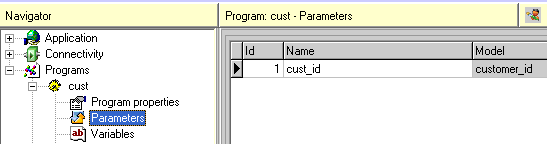

Questo capitolo introduce l’utilizzo di programmi di selezione, funzioni che
abilitano l’utente finale a scegliere valori da una lista.
Obiettivi
Al termine di questo capitolo sarai in grado di:
Create una tabella di scelta
Passare e ricevere parametri tra programmi
Capire il concetto di programma di selezione
Posizionarsi su un record della view senza filtrarla (Locate)
Introduzione
Un’esigenza comune a molte procedure è quella far interagire più programmi
(cioè unità funzionali distinte) e di scambiare tra loro informazioni. In questo
capitolo vedremo come invocare l’esecuzione di un programma dall’interno di un
altro e come scambiare parametri tra loro. In particolare vedremo come realizzare
un programma che consenta di selezionare un valore da un elenco e di restituirlo al
programma chiamante, allo scopo di valorizzare un campo a scelta
obbligatoria.
A tale scopo utilizzeremo il programma di consultazione e ricerca dei clienti
come programma di selezione per recuperare un "codice cliente".
0.10.1I parametri in entrata
Ogni programma che voglia ricevere informazioni da altri programmi deve
mettersi nella condizione di accettarle. Ciò viene fatto definendo il numero e il
tipo (data models) di informazioni accettate nell’elenco dei parametri
del programma: tali informazioni resteranno disponibili al programma chiamato
per tutto il tempo della sua esecuzione.
Dal Navigator selezionare Parameters:

Per definire un nuovo parametro:
Accedere alla tabella e creare una nuova riga (F4)
Digitare un numero progressivo di Id per il parametro
Digitare un nome significativo
F5 (zoom) dalla colonna Model per selezionare
il modello
0.10.2Il ritorno dei parametri
Il ritorno dei parametri è implicito: ovvero, dopo la conclusione del programma
chiamato, il chiamante si troverà i parametri passati by reference
(vedremo in dettaglio il significato quando parleremo del programma chiamante)
come valorizzati dal programma chiamato. La valorizzazione dei parametri avviene
tramite l’istruziune di return parameter.
Dall’elenco delle azioni creare una nuova azione di nome "return" che contenga
un’istruzione di return parameter:
Premendo F5 su Arguments accedere alle espressioni e
inserire il riferimento al "Codice cliente" della vista "customers".
Aggiungere un’istruzione di Close program all’azione "return" per
terminare il programma e ritornare l’esecuzione al programma chiamante. In questo
modo, all’esecuzione dell’azione "return", il parametro "Customer_id" verrà
valorizzato con il valore corrente di "Codice cliente", a seconda della selezione
operata dall’utente sull’interfaccia del programma, e il programma di selezione verrà terminato.
Adesso manca solo di dare la possibilità all’utilizzatore di operare la selezione:
Per questo aggiungere un pulsante sulla form a associargli la nostra nuova
azione di "return".
0.10.3Il passaggio di parametri
Creiamo un programma (di nome "caller") che contenga una sola variabile
(di alias "selected_customer") di tipo "customer_id" e che mostri la
variabile ed un pulsante per chiamare un’azione di nome "selection". Per i vari
passaggi rimandiamo ai capitoli precedenti.
A questo punto definiamo la nostra azione "selection" aggiungendo una
chiamata al programma "customer" e passando la nostra variabile
"selected_customer" come parametro.
L’istruzione call program prevede di selezionare il programma da
chiamare e poi, premendo F5 sulla cella Arguments,
presenta l’interfaccia dei parametri in uscita. I parametri possono essere passati
in due modi:
by reference - (Tramite il pulsante Variable) La variabile
o il campo della vista da passare viene selezionato dall’elenco dei campi del
programma. Al termine del programma chiamato il valore del campo potrà
risultare variato.
by expression - (Tramite il pulsante Expression) Il valore
risultante dall’espressione sarà passato e reso disponibile al programma
chiamato come valore ma nessuna azione di ritorno è attesa o possibile.
Nel nostro caso passeremo la variabile "selected_customer" come riferimento
( by reference) per consentire il recupero del valore selezionato.
0.10.4Call program e Goto program
Call program e Goto program servono entrambe per chiamare
un altro programma ma con una sostanziale differenza:
La Call program mette in attesa il programma chiamante (la cui eventuale
interfaccia rimane inattiva sullo sfondo) ed esegue il programma chiamato fino alla
sua conclusione. Al termine del chiamato (che esso preveda o no interazioni con
l’operatore) il programma chiamante riprenderà la propria esecuzione, disponendo
degli eventuali parametri valorizzati (esecuzione modale).
La Goto program passa l’esecuzione ad altro programma (oppure
sposta l’indirizzo web del browser all’url indicato) terminando in maniera
irreversibile l’esecuzione del programma chiamante. Ovviamente l’utilizzo dei
parametri by reference per una Goto program non può avere
alcun intento di recupero valore.
0.10.5L’istruzione di locate
Se, ad esempio, volessimo ottenere questo effetto: quando il campo
"selected_customer" del programma chiamante ha già un valore, posizionare
la selezione del programma chiamato sul record che descrive tale valore.
Ovvero: se inseriamo il valore "3" nel campo e premiamo il pulsante di selezione
del "Codice cliente", vogliamo che il programma "customer" si apra mostrando il
record con "id" = "3" come riga corrente.
Questo comportamento lo si ottiene tramite l’istruzione recordset locate:
l’istruzione accetta come parametri i valori di ricerca per ogni campo della tabella
principale e rende corrente il primo record che soddisfi tali valori. Nel caso che nessun
record li soddisfi, la vista si posiziona sul primo record del recordset.
Nota bene che l’istruzione di locate semplicemente posiziona
la vista sul record richiesto, senza operare alcuna variazione né di range né di
ordinamento per il recordset!
Nell’elenco delle azioni creare una nuova azione di nome "locate" e contenente
un’istruzione di recordset locate sulla vista "customers". Nell’elenco delle
espressioni di locate per campo (F5 sulla cella Arguments)
inserire un’espressione in corrispondenza del campo id che contenga il riferimento
al parametro in entrata "1 - Customer_id".
Ma quando eseguire la nostra azione? Abbiamo detto che vogliamo che il
programma si apra già posizionato sul giusto record, quindi vogliamo
che l’azione "locate" sia eseguita ogni volta che chiamiamo il programma
"customers", prima di presentare l’interfaccia all’utente.
Per questo dobbiamo indicare la nostra azione come Initial action del
programma corrente (per i dettagli vedere la sezione relativa agli eventi). Come
condizione di esecuzione della nostra istruzione di locate mettiamo una expression
che risolva in "true" se il parametro arriva valorizzato, cioè diverso da "0". Questo
impedirà l’esecuzione dell’istruzione quando tale condizione non si verifichi, cioè
quando il programma verrà invocato da menu e quindi senza alcun parametro in
entrata.
Riepilogo
In questo capitolo abbiamo creato un programma di selezione di record in
una tabella, che accetti un parametro in entrata e lo valorizzi alla pressione di
un pulsante. Abbiamo poi creato un secondo programma che chiami il primo
passando una propria variabile come parametro e ne riceva il valore ritornato.
In fine abbiamo visto come posizionare la vista uno specifico record, senza variare
i criteri di range e ordinamento per il recordset.
La Call program attende l’esecuzione del programma chiamato, dopo
di che riprende l’esecuzione del chiamante, mentre la Goto program non
prevede ritorno dal programma chiamato.
I parametri in uscita possono essere passati come variabili o come espressioni
per recuperare o meno i valori di ritorno.
I valori dei parametri in entrata sono disponibili al programma come i valori
delle normali variabili e campi delle viste.
L’istruzione di locate accetta un’espressione per ogni campo per il quale
si voglia indicare un criterio di posizionamento.